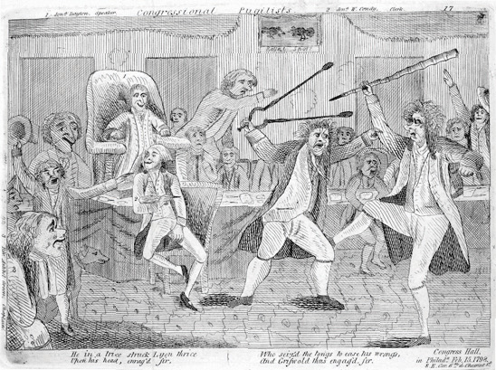
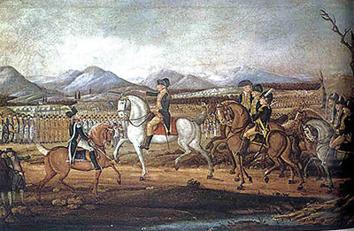
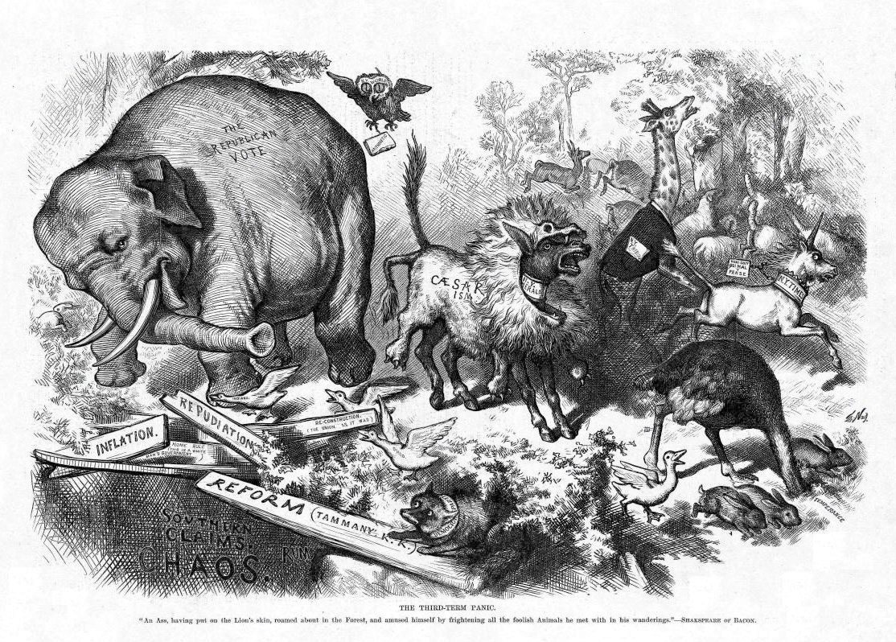
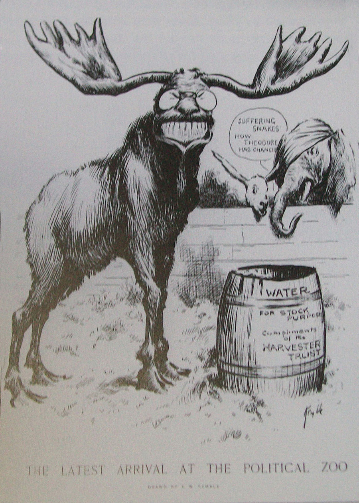
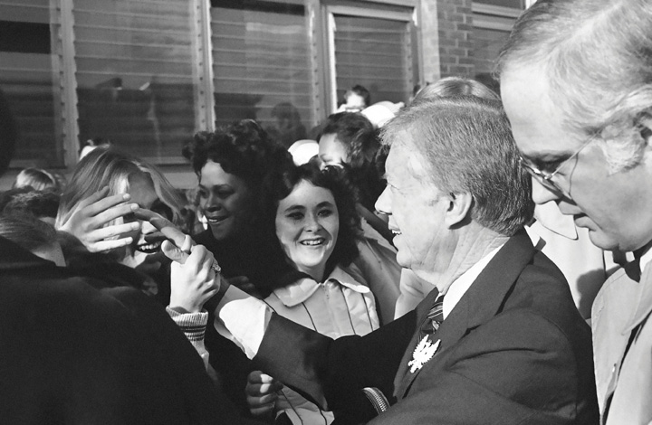

After reading this section, you should be able to answer the following questions:
Political partiesAn enduring organization under whose label candidates seek and hold office. are enduring organizations under whose labels candidates seek and hold elective offices.Leon D. Epstein, Political Parties in the American Mold (Madison: University of Wisconsin Press, 1986), 3. Parties develop and implement rules governing elections. They help organize government leadership.V. O. Key Jr., Politics, Parties, & Pressure Groups, 5th ed. (New York: Thomas Y. Crowell Company, 1964). Political parties have been likened to public utilities, such as water and power companies, because they provide vital services for a democracy.
The endurance and adaptability of American political parties is best understood by examining their colorful historical development. Parties evolved from factions in the eighteenth century to political machines in the nineteenth century. In the twentieth century, parties underwent waves of reform that some argue initiated a period of decline. The renewed parties of today are service-oriented organizations dispensing assistance and resources to candidates and politicians.John H. Aldrich, Why Parties? The Origin and Transformation of Party Politics in America (Chicago: University of Chicago Press, 1995); Samuel J. Eldersveld and Hanes Walton Jr., Political Parties in American Society, 2nd ed. (Boston: Bedford/St. Martin’s, 2000).
The Development of Political Parties
A timeline of the development of political parties can be accessed at http://www.edgate.com/elections/inactive/the_parties.
The founders of the Constitution were fearful of the rise of factions, groups in society that organize to advance a political agenda. They designed a government of checks and balances that would prevent any one group from becoming too influential. James Madison famously warned in Federalist No. 10James Madison’s essay in the Federalist Papers that deals with the need to guard against the danger of factions whose interests might be at odds with those of the wider community. of the “mischiefs of faction,” particularly a large majority that could seize control of government.Publius (James Madison), “The Federalist No. 10,” in The Federalist, ed. Robert Scigliano (New York: The Modern Library Classics, 2001), 53–61. The suspicion of parties persisted among political leaders for more than a half century after the founding. President James Monroe opined in 1822, “Surely our government may go on and prosper without the existence of parties. I have always considered their existence as the curse of the country.”Richard Hofstadter, The Idea of a Party System (Berkeley: University of California Press, 1969), 200.
Figure 10.1
Newspaper cartoons depicted conflicts that arose between the Federalists and Republicans, who sought to control government.
Despite the ambiguous feelings expressed by the founders, the first modern political party, the Federalists, appeared in the United States in 1789, more than three decades before parties developed in Great Britain and other western nations.William Nisbet Chambers and Walter Dean Burnham, The American Party Systems (New York, Oxford University Press, 1975). Since 1798, the United States has only experienced one brief period without national parties, from 1816 to 1827, when infighting following the War of 1812 tore apart the Federalists and the Republicans.William Nisbet Chambers, Political Parties in a New Nation (New York: Oxford University Press, 1963).
The first American party system had its origins in the period following the Revolutionary War. Despite Madison’s warning in Federalist No. 10, the first parties began as political factions. Upon taking office in 1789, President George Washington sought to create an “enlightened administration” devoid of political parties.John Kenneth White and Daniel M. Shea, New Party Politics (Boston: Bedford/St. Martin’s, 2000). He appointed two political adversaries to his cabinet, Alexander Hamilton as treasury secretary and Thomas Jefferson as secretary of state, hoping that the two great minds could work together in the national interest. Washington’s vision of a government without parties, however, was short-lived.
Hamilton and Jefferson differed radically in their approaches to rectifying the economic crisis that threatened the new nation.Joseph Charles, The Origins of the American Party System (New York: Harper & Row, 1956). Hamilton proposed a series of measures, including a controversial tax on whiskey and the establishment of a national bank. He aimed to have the federal government assume the entire burden of the debts incurred by the states during the Revolutionary War. Jefferson, a Virginian who sided with local farmers, fought this proposition. He believed that moneyed business interests in the New England states stood to benefit from Hamilton’s plan. Hamilton assembled a group of powerful supporters to promote his plan, a group that eventually became the Federalist Party.Richard Hofstadter, The Idea of a Party System (Berkeley: University of California Press, 1969).
The Federalist Party originated at the national level but soon extended to the states, counties, and towns. Hamilton used business and military connections to build the party at the grassroots level, primarily in the Northeast. Because voting rights had been expanded during the Revolutionary War, the Federalists sought to attract voters to their party. They used their newfound organization for propagandizing and campaigning for candidates. They established several big-city newspapers to promote their cause, including the Gazette of the United States, the Columbian Centinel, and the American Minerva, which were supplemented by broadsheets in smaller locales. This partisan press initiated one of the key functions of political parties—articulating positions on issues and influencing public opinion.See William Nisbet Chambers, Political Parties in a New Nation (New York: Oxford University Press, 1963).
Figure 10.2 The Whiskey Rebellion
Farmers protested against a tax on whiskey imposed by the federal government. President George Washington established the power of the federal government to suppress rebellions by sending the militia to stop the uprising in western Pennsylvania. Washington himself led the troops to establish his presidential authority.
Disillusioned with Washington’s administration, especially its foreign policy, Jefferson left the cabinet in 1794. Jefferson urged his friend James Madison to take on Hamilton in the press, stating, “For God’s sake, my Dear Sir, take up your pen, select your most striking heresies, and cut him to pieces in the face of the public.”William Nisbet Chambers, Political Parties in a New Nation (New York: Oxford University Press, 1963), 58. Madison did just that under the pen name of Helvidius. His writings helped fuel an anti-Federalist opposition movement, which provided the foundation for the Republican Party. This early Republican Party differs from the present-day party of the same name. Opposition newspapers, the National Gazette and the Aurora, communicated the Republicans’ views and actions, and inspired local groups and leaders to align themselves with the emerging party.See William Nisbet Chambers, Political Parties in a New Nation (New York: Oxford University Press, 1963). The Whiskey RebellionIn 1794, farmers on the western frontier protested against a tax on whiskey that was part of Treasury Secretary Alexander Hamilton’s plan to eliminate the national debt; the rebellion was suppressed by an army dispatched by the newly formed national government. in 1794, staged by farmers angered by Hamilton’s tax on whiskey, reignited the founders’ fears that violent factions could overthrow the government.Michael Schudson, The Good Citizen (New York: Free Press, 1998).
Political parties were first evident in presidential elections in 1796, when Federalist John Adams was barely victorious over Republican Thomas Jefferson. During the election of 1800, Republican and Federalist members of Congress met formally to nominate presidential candidates, a practice that was a precursor to the nominating conventions used today. As the head of state and leader of the Republicans, Jefferson established the American tradition of political parties as grassroots organizations that band together smaller groups representing various interests, run slates of candidates for office, and present issue platforms.John Kenneth White and Daniel M. Shea, New Party Politics (Boston: Bedford/St. Martin’s, 2000).
The early Federalist and Republican parties consisted largely of political officeholders. The Federalists not only lacked a mass membership base but also were unable to expand their reach beyond the monied classes. As a result, the Federalists ceased to be a force after the 1816 presidential election, when they received few votes. The Republican Party, bolstered by successful presidential candidates Thomas Jefferson, James Madison, and James Monroe, was the sole surviving national party by 1820. Infighting soon caused the Republicans to cleave into warring factions: the National Republicans and the Democratic-Republicans.Ronald P. Formisano, “Federalists and Republicans: Parties, Yes—System, No,” in The Evolution of the American Electoral Systems, ed. Paul Kleppner, Walter Dean Burnham, Ronald P. Formisano, Samuel P. Hays, Richard Jensen, and William G. Shade (Westport, CT: Greenwood Press, 1981), 37–76.
A true political party system with two durable institutions associated with specific ideological positions and plans for running the government did not begin to develop until 1828. The Democratic-Republicans, which became the Democratic Party, elected their presidential candidate, Andrew Jackson. The Whig Party, an offshoot of the National Republicans, formed in opposition to the Democrats in 1834.Michael F. Holt, The Rise and Fall of the American Whig Party (New York: Oxford University Press, 2003).
The era of Jacksonian DemocracyA period lasting from the election of President Andrew Jackson in 1828 until the outbreak of the Civil War, which featured the rise of mass-based party politics., which lasted until the outbreak of the Civil War, featured the rise of mass-based party politics. Both parties initiated the practice of grassroots campaigning, including door-to-door canvassing of voters and party-sponsored picnics and rallies. Citizens voted in record numbers, with turnouts as high as 96 percent in some states.Michael F. Holt, The Rise and Fall of the American Whig Party (New York: Oxford University Press, 2003). Campaign buttons publically displaying partisan affiliation came into vogue. The spoils systemAlso known as patronage, a system in which voters were rewarded for their party loyalty and votes with jobs and favors dispensed by party leaders., also known as patronage, where voters’ party loyalty was rewarded with jobs and favors dispensed by party elites, originated during this era.
The two-party system consisting of the Democrats and Republicans was in place by 1860. The Whig Party had disintegrated as a result of internal conflicts over patronage and disputes over the issue of slavery. The Democratic Party, while divided over slavery, remained basically intact.Michael F. Holt, The Rise and Fall of the American Whig Party (New York: Oxford University Press, 2003). The Republican Party was formed in 1854 during a gathering of former Whigs, disillusioned Democrats, and members of the Free-Soil Party, a minor antislavery party. The Republicans came to prominence with the election of Abraham Lincoln.
Figure 10.3 Thomas Nast Cartoon of the Republican Elephant
The donkey and the elephant have been symbols of the two major parties since cartoonist Thomas Nast popularized these images in the 1860s.
Source: Photo courtesy of Harper’s Weekly, http://commons.wikimedia.org/wiki/File:NastRepublicanElephant.jpg.
Parties were especially powerful in the post–Civil War period through the Great Depression, when more than 15 million people immigrated to the United States from Europe, many of whom resided in urban areas. Party machinesPartisan command structures headed by bosses who exacted loyalty and services from underlings in return for jobs and favors; machines were found primarily in cities., cohesive, authoritarian command structures headed by bosses who exacted loyalty and services from underlings in return for jobs and favors, dominated political life in cities. Machines helped immigrants obtain jobs, learn the laws of the land, gain citizenship, and take part in politics.
Machine politics was not based on ideology, but on loyalty and group identity. The Curley machine in Boston was made up largely of Irish constituents who sought to elect their own.John Kenneth White and Daniel M. Shea, New Party Politics (Boston: Bedford/St. Martin’s, 2000). Machines also brought different groups together. The tradition of parties as ideologically ambiguous umbrella organizations stems from Chicago-style machines that were run by the Daley family. The Chicago machine was described as a “hydra-headed monster” that “encompasses elements of every major political, economic, racial, ethnic, governmental, and paramilitary power group in the city.”Milton Rakove, Don’t Make No Waves, Don’t Back No Losers: An Insider’s Analysis of the Daley Machine (Bloomington: Indiana University Press, 1975), 3. The idea of a “balanced ticket” consisting of representatives of different groups developed during the machine-politics era.Gerald M. Pomper, Passions and Interests (Lawrence: University Press of Kansas, 1992).
Because party machines controlled the government, they were able to sponsor public works programs, such as roads, sewers, and construction projects, as well as social welfare initiatives, which endeared them to their followers. The ability of party bosses to organize voters made them a force to be reckoned with, even as their tactics were questionable and corruption was rampant.A. James Riechley, The Life of the Parties (New York: Free Press, 1992). Bosses such as William Tweed in New York were larger-than-life figures who used their powerful positions for personal gain. Tammany Hall boss George Washington Plunkitt describes what he called “honest graft”:
My party’s in power in the city, and its goin’ to undertake a lot of public improvements. Well, I’m tipped off, say, that they’re going to lay out a new park at a certain place. I see my opportunity and I take it. I go to that place and I buy up all the land I can in the neighborhood. Then the board of this or that makes the plan public, and there is a rush to get my land, which nobody cared particular for before. Ain’t it perfectly honest to charge a good price and make a profit on my investment and foresight? Of course, it is. Well, that’s honest graft.William L. Riordon, Plunkitt of Tammany Hall (St. James, NY: Brandywine Press, 1994), 3.
Boss Tweed Meets His Match
The lasting image of the political party boss as a corrupt and greedy fat cat was the product of a relentless campaign by American political cartoonist Thomas Nast in Harper’s Weekly from 1868 to 1871. Nast’s target was William “Boss” Tweed, leader of the New York Tammany Hall party machine, who controlled the local Democratic Party for nearly a decade.
Nast established the political cartoon as a powerful force in shaping public opinion and the press as a mechanism for “throwing the rascals” out of government. His cartoons ingrained themselves in American memories because they were among the rare printed images available to a wide audience in a period when photographs had not yet appeared in newspapers or magazines, and when literacy rates were much lower than today. Nast’s skill at capturing political messages in pictures presented a legacy not just for today’s cartoonists but for photographers and television journalists. His skill also led to the undoing of Boss Tweed.
Tweed and his gang of New York City politicians gained control of the local Democratic Party by utilizing the Society of Tammany (Tammany Hall), a fraternal organization, as a base. Through an extensive system of patronage whereby the city’s growing Irish immigrant population was assured employment in return for votes, the Tweed Ring was able to influence the outcome of elections and profit personally from contracts with the city. Tweed controlled all New York state and city Democratic Party nominations from 1860 to 1870. He used illegal means to force the election of a governor, a mayor, and the speaker of the assembly.
The New York Times, Harper’s Weekly, reform groups, and disgruntled Democrats campaigned vigorously against Tweed and his cronies in editorials and opinion pieces, but none was as successful as Nast’s cartoons in conveying the corrupt and greedy nature of the regime. Tweed reacted to Nast’s cartoon, “Who Stole the People’s Money,” by demanding of his supporters, “Stop them damned pictures. I don’t care what the papers write about me. My constituents can’t read. But, damn it, they can see pictures.”Jonathan Kandall, “Boss,” Smithsonian Magazine, February 2002, accessed March 23, 2011, http://www.smithsonianmag.com/people-places/boss.html.
“Who Stole the People’s Money.” Thomas Nast’s cartoon, “Who Stole the People’s Money,” implicating the Tweed Ring appeared in Harper’s Weekly on August 19, 1871.
Source: Photo courtesy of Harper’s Weekly, http://www.harpweek.com/09cartoon/BrowseByDateCartoon-Large.asp?Month=August&Date=19.
The Tweed Ring was voted out in 1871, and Tweed was ultimately jailed for corruption. He escaped and was arrested in Spain by a customs official who didn’t read English, but who recognized him from the Harper’s Weekly political cartoons. He died in jail in New York.
Not everyone benefited from political machines. There were some problems that machines either could not or would not deal with. Industrialization and the rise of corporate giants created great disparities in wealth. Dangerous working conditions existed in urban factories and rural coal mines. Farmers faced falling prices for their products. Reformers blamed these conditions on party corruption and inefficiency. They alleged that party bosses were diverting funds that should be used to improve social conditions into their own pockets and keeping their incompetent friends in positions of power.
The mugwumps, reformers who declared their independence from political parties, banded together in the 1880s and provided the foundation for the Progressive MovementReformers who came together in the 1880s to fight party corruption and inefficiency that they felt was the legacy of party machines.. The Progressives initiated reforms that lessened the parties’ hold over the electoral system. Voters had been required to cast color-coded ballots provided by the parties, which meant that their vote choice was not confidential. The Progressives succeeded by 1896 in having most states implement the secret ballot. The secret ballot is issued by the state and lists all parties and candidates. This system allows people to split their ticket when voting rather than requiring them to vote the party line. The Progressives also hoped to lessen machines’ control over the candidate selection process. They advocated a system of direct primary electionsAn election that decides who will be a political party’s nominee for an office in the general election. in which the public could participate rather than caucusesMeetings held by party members to select candidates who will run for office., or meetings of party elites. The direct primary had been instituted in only a small number of states, such as Wisconsin, by the early years of the twentieth century. The widespread use of direct primaries to select presidential candidates did not occur until the 1970s.
The Progressives sought to end party machine dominance by eliminating the patronage system. Instead, employment would be awarded on the basis of qualifications rather than party loyalty. The merit system, now called the civil serviceGovernment employment that would be awarded on the basis of qualifications rather than party loyalty., was instituted in 1883 with the passage of the Pendleton Act. The merit system wounded political machines, although it did not eliminate them.Charles Merriam and Harold F. Gosnell, The American Party System (New York: MacMillan, 1922).
Progressive reformers ran for president under party labels. Former president Theodore Roosevelt split from the Republicans and ran as the Bull Moose Party candidate in 1912, and Robert LaFollette ran as the Progressive Party candidate in 1924. Republican William Howard Taft defeated Roosevelt, and LaFollette lost to Republican Calvin Coolidge.
Figure 10.4 Progressive Reformers Political Cartoon
The Progressive Reformers’ goal of more open and representative parties resonate today.
Source: Photo courtesy of E W Kemble, http://commons.wikimedia.org/wiki/File:Theodore_Roosevelt_Progressive_Party_Cartoon,_1912_copy.jpg.
Democratic President Franklin Delano Roosevelt’s New DealThe program instituted by President Franklin Roosevelt to lead the country out of the Great Depression; it included the creation of jobs and executive agencies to oversee the economic recovery. program for leading the United States out of the Great Depression in the 1930s had dramatic effects on political parties. The New Deal placed the federal government in the pivotal role of ensuring the economic welfare of citizens. Both major political parties recognized the importance of being close to the power center of government and established national headquarters in Washington, DC.
An era of executive-centered government also began in the 1930s, as the power of the president was expanded. Roosevelt became the symbolic leader of the Democratic Party.A. James Riechley, The Life of the Parties (New York: Free Press, 1992). Locating parties’ control centers in the national capital eventually weakened them organizationally, as the basis of their support was at the local grassroots level. National party leaders began to lose touch with their local affiliates and constituents. Executive-centered government weakened parties’ ability to control the policy agenda.John Kenneth White and Daniel M. Shea, New Party Politics (Boston: Bedford/St. Martin’s, 2000).
The Cold War period that began in the late 1940s was marked by concerns over the United States’ relations with Communist countries, especially the Soviet Union. Following in the footsteps of the extremely popular president Franklin Roosevelt, presidential candidates began to advertise their independence from parties and emphasized their own issue agendas even as they ran for office under the Democratic and Republican labels. Presidents, such as Dwight D. Eisenhower, Ronald Reagan, and George H. W. Bush, won elections based on personal, rather than partisan, appeals.James W. Caeser, Presidential Selection (Princeton, NJ: Princeton University Press, 1979).
Political parties instituted a series of reforms beginning in the late 1960s amid concerns that party elites were not responsive to the public and operated secretively in so-called smoke-filled rooms. The Democrats were the first to act, forming the McGovern-Fraser Commission to revamp the presidential nominating system. The commission’s reforms, adopted in 1972, allowed more average voters to serve as delegates to the national party nominating conventionA convention held by political parties to select their presidential candidate and develop the party’s platform., where the presidential candidate is chosen. The result was that many state Democratic parties switched from caucuses, where convention delegates are selected primarily by party leaders, to primary elections, which make it easier for the public to take part. The Republican Party soon followed with its own reforms that resulted in states adopting primaries.William Crotty, American Parties in Decline (Boston: Little, Brown, 1984).
Figure 10.5 Jimmy Carter Campaigning in the 1980 Presidential Campaign
Democrat Jimmy Carter, a little-known Georgia governor and party outsider, was one of the first presidential candidates to run a successful campaign by appealing to voters directly through the media. After Carter’s victory, candidate-centered presidential campaigns became the norm.
Source: Used with permission from AP Photo/Wilson.
The unintended consequence of reform was to diminish the influence of political parties in the electoral process and to promote the candidate-centered politicsRather than relying heavily on party support, candidates form their own campaign organizations when running for office. that exists today. Candidates build personal campaign organizations rather than rely on party support. The media have contributed to the rise of candidate-centered politics. Candidates can appeal directly to the public through television rather than working their way through the party apparatus when running for election.Diana Owen, Media Messages in American Presidential Elections (Westport, CT: Greenwood Press, 1991). Candidates use social media, such as Facebook and Twitter, to connect with voters. Campaign professionals and media consultants assume many of the responsibilities previously held by parties, such as developing election strategies and getting voters to the polls.
Political parties are enduring organizations that run candidates for office. American parties developed quickly in the early years of the republic despite concerns about factions expressed by the founders. A true, enduring party system developed in 1828. The two-party system of Democrats and Republicans was in place before the election of President Abraham Lincoln in 1860.
Party machines became powerful in the period following the Civil War when an influx of immigrants brought new constituents to the country. The Progressive Movement initiated reforms that fundamentally changed party operations. Party organizations were weakened during the period of executive-centered government that began during the New Deal.
Reforms of the party nominating system resulted in the rise of candidate-centered politics beginning in the 1970s. The media contributes to candidate-centered politics by allowing candidates to take their message to the public directly without the intervention of parties.